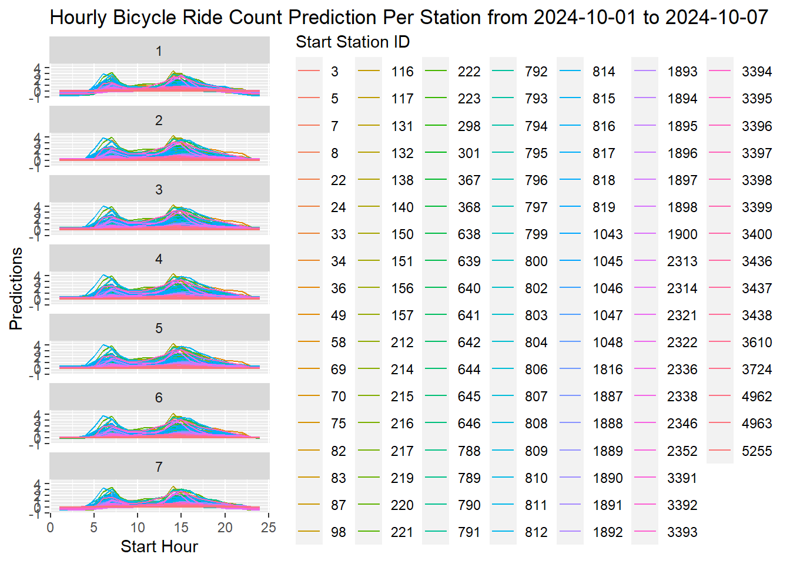

Code
library(magrittr)
library(dplyr)
library(readr)
library(data.table)
library(assertthat)
library(rsample)
library(purrr)
library(tidyverse)
library(ggmap)
library(leaflet)library(magrittr)
library(dplyr)
library(readr)
library(data.table)
library(assertthat)
library(rsample)
library(purrr)
library(tidyverse)
library(ggmap)
library(leaflet)#Read in all bike rides from 01 Jan 2024 to 8 Dec 2024
# Get a List of all files in directory named with a key word, say all `.csv` files
filenames <- list.files("byssykkel-data-2024", pattern=".csv", full.names=TRUE)
# read and row bind all data sets
bike_rides_2024_data <- rbindlist(lapply(filenames,fread))
#Make a combination of observations for every station, date and hour of day.
start_station_id = as.double(unique(bike_rides_2024_data$start_station_id))
floor_start_dh <- seq(as.POSIXct("2024-01-01 00:00:00"), as.POSIXct("2024-12-19 23:00:00"), by = "hours")
df <-
expand.grid(floor_start_dh, start_station_id) %>%
rename(floor_start_dh = Var1,
start_station_id = Var2) %>%
arrange(start_station_id)
head(df,10) floor_start_dh start_station_id
1 2024-01-01 00:00:00 3
2 2024-01-01 01:00:00 3
3 2024-01-01 02:00:00 3
4 2024-01-01 03:00:00 3
5 2024-01-01 04:00:00 3
6 2024-01-01 05:00:00 3
7 2024-01-01 06:00:00 3
8 2024-01-01 07:00:00 3
9 2024-01-01 08:00:00 3
10 2024-01-01 09:00:00 3# Count of rides for each hour
bike_rides_2024 <- bike_rides_2024_data %>%
mutate(start_date = format(as.POSIXct(.$started_at, '%Y-%m-%d %H:%M:%S'), '%Y-%m-%d %H:%00:%00')) %>%
group_by(start_station_id, start_date) %>%
summarise(n_rides = n())
# Change the class of start_date into date type (instead of character)
bike_rides_2024$start_date <- as.POSIXct(bike_rides_2024$start_date )
bike_rides_2024# A tibble: 217,104 × 3
# Groups: start_station_id [123]
start_station_id start_date n_rides
<int> <dttm> <int>
1 3 2024-01-01 11:00:00 1
2 3 2024-01-01 12:00:00 3
3 3 2024-01-01 15:00:00 1
4 3 2024-01-01 21:00:00 1
5 3 2024-01-02 05:00:00 1
6 3 2024-01-02 06:00:00 1
7 3 2024-01-02 09:00:00 1
8 3 2024-01-02 12:00:00 1
9 3 2024-01-02 14:00:00 1
10 3 2024-01-02 17:00:00 1
# ℹ 217,094 more rows##join the data and fill the NA value (no ride in that hour) as "0"
df_agg <- left_join(df, bike_rides_2024, by = c("start_station_id" = "start_station_id", "floor_start_dh" = "start_date"))
df_agg [is.na(df_agg )] <- 0
## create weekday start as 1-> 7 (Sunday=1 to Saturday=7), start_hour as 0 -> 23
df_agg <- df_agg %>%
mutate(start_hour=as.factor(hour(floor_start_dh)),weekday_start=as.factor(wday(floor_start_dh)))
head(df_agg,10) floor_start_dh start_station_id n_rides start_hour weekday_start
1 2024-01-01 00:00:00 3 0 0 2
2 2024-01-01 01:00:00 3 0 1 2
3 2024-01-01 02:00:00 3 0 2 2
4 2024-01-01 03:00:00 3 0 3 2
5 2024-01-01 04:00:00 3 0 4 2
6 2024-01-01 05:00:00 3 0 5 2
7 2024-01-01 06:00:00 3 0 6 2
8 2024-01-01 07:00:00 3 0 7 2
9 2024-01-01 08:00:00 3 0 8 2
10 2024-01-01 09:00:00 3 0 9 2#Name the data set df_agg and show that the data set passes 2 tests below:
#Test 1
assert_that(df_agg %>%
group_by(start_station_id, floor_start_dh) %>%
summarise(n = n()) %>%
ungroup() %>%
summarise(max_n = max(n)) %$%
max_n == 1,
msg = "Duplicates on stations/hours/dates")[1] TRUE#Test 2
assert_that(df_agg %>%
group_by(start_station_id) %>%
mutate(
timediff = floor_start_dh - lag(floor_start_dh,
order_by = floor_start_dh)
) %>%
filter(as.numeric(timediff) != 1) %>%
nrow(.) == 0,
msg="Time diffs. between obs are not always 1 hour")[1] TRUE##Problem 3:
##(a) Estimate a linear regression model for each of the stations.
#Using factors for weekdays and hour of day as explanatory variables
#and n_rides as the response variable. Determine the exact specification
#as you see fit.
# Split input data into train set and test set (grouped by station id, train/test ratio is 3/1)
by_station <- df_agg %>% group_by(start_station_id) %>%
summarize(split = list(initial_time_split(cur_data()))) %>%
group_by(start_station_id) %>%
mutate(data.train=list(training(split[[1]])),data.test=list(testing(split[[1]]))) %>%
select(!split)
by_station# A tibble: 123 × 3
# Groups: start_station_id [123]
start_station_id data.train data.test
<dbl> <list> <list>
1 3 <tibble [6,372 × 4]> <tibble [2,124 × 4]>
2 5 <tibble [6,372 × 4]> <tibble [2,124 × 4]>
3 7 <tibble [6,372 × 4]> <tibble [2,124 × 4]>
4 8 <tibble [6,372 × 4]> <tibble [2,124 × 4]>
5 22 <tibble [6,372 × 4]> <tibble [2,124 × 4]>
6 24 <tibble [6,372 × 4]> <tibble [2,124 × 4]>
7 33 <tibble [6,372 × 4]> <tibble [2,124 × 4]>
8 34 <tibble [6,372 × 4]> <tibble [2,124 × 4]>
9 36 <tibble [6,372 × 4]> <tibble [2,124 × 4]>
10 49 <tibble [6,372 × 4]> <tibble [2,124 × 4]>
# ℹ 113 more rowsmap(setNames(by_station$data.train, by_station$start_station_id)[1:2], summary)$`3`
floor_start_dh n_rides start_hour weekday_start
Min. :2024-01-01 00:00:00 Min. :0.0000 0 : 266 1:900
1st Qu.:2024-03-07 08:45:00 1st Qu.:0.0000 1 : 266 2:912
Median :2024-05-12 18:30:00 Median :0.0000 3 : 266 3:912
Mean :2024-05-12 18:30:00 Mean :0.6497 4 : 266 4:912
3rd Qu.:2024-07-18 03:15:00 3rd Qu.:1.0000 5 : 266 5:912
Max. :2024-09-22 12:00:00 Max. :9.0000 6 : 266 6:912
(Other):4776 7:912
$`5`
floor_start_dh n_rides start_hour weekday_start
Min. :2024-01-01 00:00:00 Min. : 0.0000 0 : 266 1:900
1st Qu.:2024-03-07 08:45:00 1st Qu.: 0.0000 1 : 266 2:912
Median :2024-05-12 18:30:00 Median : 0.0000 3 : 266 3:912
Mean :2024-05-12 18:30:00 Mean : 0.5956 4 : 266 4:912
3rd Qu.:2024-07-18 03:15:00 3rd Qu.: 1.0000 5 : 266 5:912
Max. :2024-09-22 12:00:00 Max. :10.0000 6 : 266 6:912
(Other):4776 7:912 map(setNames(by_station$data.test, by_station$start_station_id)[1:2], summary)$`3`
floor_start_dh n_rides start_hour weekday_start
Min. :2024-09-22 13:00:00 Min. :0.0000 2 : 89 1:300
1st Qu.:2024-10-14 15:45:00 1st Qu.:0.0000 13 : 89 2:312
Median :2024-11-05 17:30:00 Median :0.0000 14 : 89 3:312
Mean :2024-11-05 17:30:00 Mean :0.4793 15 : 89 4:312
3rd Qu.:2024-11-27 20:15:00 3rd Qu.:1.0000 16 : 89 5:312
Max. :2024-12-19 23:00:00 Max. :8.0000 17 : 89 6:288
(Other):1590 7:288
$`5`
floor_start_dh n_rides start_hour weekday_start
Min. :2024-09-22 13:00:00 Min. : 0.0000 2 : 89 1:300
1st Qu.:2024-10-14 15:45:00 1st Qu.: 0.0000 13 : 89 2:312
Median :2024-11-05 17:30:00 Median : 0.0000 14 : 89 3:312
Mean :2024-11-05 17:30:00 Mean : 0.5099 15 : 89 4:312
3rd Qu.:2024-11-27 20:15:00 3rd Qu.: 1.0000 16 : 89 5:312
Max. :2024-12-19 23:00:00 Max. :10.0000 17 : 89 6:288
(Other):1590 7:288 ## A function that fits the linear regression model to each station
station_model <- function(df) {
lm(n_rides~weekday_start + start_hour, data=df)
}
# put the linear model to each station by using purrr:map() to apply the model to each element
models <- map(by_station$data.train, station_model)
# Put the model inside a mutate
by_station <- by_station %>%
group_by(start_station_id) %>%
mutate(model = map(data.train, station_model)) %>%
ungroup()
by_station# A tibble: 123 × 4
start_station_id data.train data.test model
<dbl> <list> <list> <list>
1 3 <tibble [6,372 × 4]> <tibble [2,124 × 4]> <lm>
2 5 <tibble [6,372 × 4]> <tibble [2,124 × 4]> <lm>
3 7 <tibble [6,372 × 4]> <tibble [2,124 × 4]> <lm>
4 8 <tibble [6,372 × 4]> <tibble [2,124 × 4]> <lm>
5 22 <tibble [6,372 × 4]> <tibble [2,124 × 4]> <lm>
6 24 <tibble [6,372 × 4]> <tibble [2,124 × 4]> <lm>
7 33 <tibble [6,372 × 4]> <tibble [2,124 × 4]> <lm>
8 34 <tibble [6,372 × 4]> <tibble [2,124 × 4]> <lm>
9 36 <tibble [6,372 × 4]> <tibble [2,124 × 4]> <lm>
10 49 <tibble [6,372 × 4]> <tibble [2,124 × 4]> <lm>
# ℹ 113 more rows## Check models of station 2 and station 3
by_station %>%
filter(start_station_id == 2) %>%
pluck("model", 1) %>%
summary()Length Class Mode
0 NULL NULL by_station %>%
filter(start_station_id == 3) %>%
pluck("model", 1) %>%
summary()
Call:
lm(formula = n_rides ~ weekday_start + start_hour, data = df)
Residuals:
Min 1Q Median 3Q Max
-1.5594 -0.6090 -0.1085 0.2160 7.7419
Coefficients:
Estimate Std. Error t value Pr(>|t|)
(Intercept) -0.184505 0.065495 -2.817 0.00486 **
weekday_start2 0.213062 0.044839 4.752 2.06e-06 ***
weekday_start3 0.271177 0.044839 6.048 1.55e-09 ***
weekday_start4 0.310650 0.044839 6.928 4.69e-12 ***
weekday_start5 0.297492 0.044839 6.635 3.52e-11 ***
weekday_start6 0.186747 0.044839 4.165 3.16e-05 ***
weekday_start7 0.038720 0.044839 0.864 0.38787
start_hour1 -0.003759 0.082750 -0.045 0.96377
start_hour2 -0.004470 0.082828 -0.054 0.95696
start_hour3 0.007519 0.082750 0.091 0.92761
start_hour4 0.150376 0.082750 1.817 0.06923 .
start_hour5 0.548872 0.082750 6.633 3.56e-11 ***
start_hour6 1.180451 0.082750 14.265 < 2e-16 ***
start_hour7 1.022556 0.082750 12.357 < 2e-16 ***
start_hour8 0.759398 0.082750 9.177 < 2e-16 ***
start_hour9 0.605263 0.082750 7.314 2.91e-13 ***
start_hour10 0.710526 0.082750 8.586 < 2e-16 ***
start_hour11 0.733083 0.082750 8.859 < 2e-16 ***
start_hour12 0.883459 0.082750 10.676 < 2e-16 ***
start_hour13 1.354021 0.082828 16.347 < 2e-16 ***
start_hour14 1.433266 0.082828 17.304 < 2e-16 ***
start_hour15 1.384209 0.082828 16.712 < 2e-16 ***
start_hour16 1.229492 0.082828 14.844 < 2e-16 ***
start_hour17 0.935153 0.082828 11.290 < 2e-16 ***
start_hour18 0.859681 0.082828 10.379 < 2e-16 ***
start_hour19 0.580436 0.082828 7.008 2.67e-12 ***
start_hour20 0.671002 0.082828 8.101 6.48e-16 ***
start_hour21 0.406851 0.082828 4.912 9.24e-07 ***
start_hour22 0.055908 0.082828 0.675 0.49971
start_hour23 -0.004470 0.082828 -0.054 0.95696
---
Signif. codes: 0 '***' 0.001 '**' 0.01 '*' 0.05 '.' 0.1 ' ' 1
Residual standard error: 0.9543 on 6342 degrees of freedom
Multiple R-squared: 0.2082, Adjusted R-squared: 0.2045
F-statistic: 57.49 on 29 and 6342 DF, p-value: < 2.2e-16##(b) Predict the number of rides for each hour of day,
#weekday and station using these regression models.
#Collect the predictions in a data structure, together with the station ID.
by_station <- by_station %>%
group_by(start_station_id) %>%
mutate(predictions = list(predict(model[[1]], newdata=data.test[[1]]))) %>%
ungroup()
by_station# A tibble: 123 × 5
start_station_id data.train data.test model predictions
<dbl> <list> <list> <list> <list>
1 3 <tibble [6,372 × 4]> <tibble [2,124 × 4]> <lm> <dbl>
2 5 <tibble [6,372 × 4]> <tibble [2,124 × 4]> <lm> <dbl>
3 7 <tibble [6,372 × 4]> <tibble [2,124 × 4]> <lm> <dbl>
4 8 <tibble [6,372 × 4]> <tibble [2,124 × 4]> <lm> <dbl>
5 22 <tibble [6,372 × 4]> <tibble [2,124 × 4]> <lm> <dbl>
6 24 <tibble [6,372 × 4]> <tibble [2,124 × 4]> <lm> <dbl>
7 33 <tibble [6,372 × 4]> <tibble [2,124 × 4]> <lm> <dbl>
8 34 <tibble [6,372 × 4]> <tibble [2,124 × 4]> <lm> <dbl>
9 36 <tibble [6,372 × 4]> <tibble [2,124 × 4]> <lm> <dbl>
10 49 <tibble [6,372 × 4]> <tibble [2,124 × 4]> <lm> <dbl>
# ℹ 113 more rowsprediction_df_from_station_nr <- function(station_nr) {
by_station %>%
filter(start_station_id == station_nr) %>%
ungroup() %>%
select(c(data.test, predictions)) %>%
unnest(c(data.test, predictions)) %>%
mutate(start_station_id = station_nr)
}
predictions_from_all_stations <- bind_rows(map(by_station$start_station_id, prediction_df_from_station_nr))
predictions_from_all_stations# A tibble: 261,252 × 6
floor_start_dh n_rides start_hour weekday_start predictions
<dttm> <dbl> <fct> <fct> <dbl>
1 2024-09-22 13:00:00 1 13 1 1.17
2 2024-09-22 14:00:00 1 14 1 1.25
3 2024-09-22 15:00:00 0 15 1 1.20
4 2024-09-22 16:00:00 0 16 1 1.04
5 2024-09-22 17:00:00 1 17 1 0.751
6 2024-09-22 18:00:00 1 18 1 0.675
7 2024-09-22 19:00:00 0 19 1 0.396
8 2024-09-22 20:00:00 0 20 1 0.486
9 2024-09-22 21:00:00 1 21 1 0.222
10 2024-09-22 22:00:00 0 22 1 -0.129
# ℹ 261,242 more rows
# ℹ 1 more variable: start_station_id <dbl>##(c) Create a set of plots showing the predicted number of bicycle rides throughout an entire week.
#Place predicted volume on the y-axis and the hour of day on the x-axis.
#Make one plot per day of week. Use different colors for each station,
#and format the plots as appropriate.
predictions_from_all_stations %>%
filter(floor_start_dh > "2024-10-01 00:00:00", floor_start_dh <= "2024-10-08 00:00:00") %>%
ggplot(aes(x = as.numeric(start_hour), y = predictions, color = factor(start_station_id))) +
geom_line() +
labs(
x = "Start Hour",
y = "Predictions",
colour = "Start Station ID",
title = "Hourly Bicycle Ride Count Prediction Per Station from 2024-10-01 to 2024-10-07"
) +
facet_wrap(vars(weekday_start), scales = "fixed", ncol = 1)
##### Problem 4:
# Create a function with the following specifications
#
# • The function should, as a minimum, take as arguments the date and the hour.
#
# • The function should return a plot with the following properties:
#
# – The latitude and the longitude should be mapped to the x and the y-axis respectively.
#
# – The plot should give information about the traffic volume (or predicted traffic volume) for each of the stations in the data set at the given time.
#
# – The plot should be well formatted.
#
# Note that the latitude and longitude of the stations may change over time. Use your best judgement to overcome this problem in order to make a figure that informs the reader of where bicycle traffic is originating from in Bergen at given times.
# The latitude and longitude of the stations may change over time -> calculate the average lon and lat of each station through time
station <- bike_rides_2024_data %>%
select(start_station_id, start_station_longitude, start_station_latitude) %>%
group_by(start_station_id) %>%
summarise(lon = sum(start_station_longitude)/n(), lat = sum(start_station_latitude)/n())
station# A tibble: 123 × 3
start_station_id lon lat
<int> <dbl> <dbl>
1 3 5.33 60.4
2 5 5.33 60.4
3 7 5.32 60.4
4 8 5.36 60.4
5 22 5.32 60.4
6 24 5.35 60.4
7 33 5.35 60.4
8 34 5.33 60.4
9 36 5.32 60.4
10 49 5.32 60.4
# ℹ 113 more rows# join data of lon and lat of each station into the df_agg
df_agg_lonlat <- left_join(df_agg, station , by = c("start_station_id" = "start_station_id"))
head(df_agg_lonlat,10) floor_start_dh start_station_id n_rides start_hour weekday_start
1 2024-01-01 00:00:00 3 0 0 2
2 2024-01-01 01:00:00 3 0 1 2
3 2024-01-01 02:00:00 3 0 2 2
4 2024-01-01 03:00:00 3 0 3 2
5 2024-01-01 04:00:00 3 0 4 2
6 2024-01-01 05:00:00 3 0 5 2
7 2024-01-01 06:00:00 3 0 6 2
8 2024-01-01 07:00:00 3 0 7 2
9 2024-01-01 08:00:00 3 0 8 2
10 2024-01-01 09:00:00 3 0 9 2
lon lat
1 5.328564 60.3882
2 5.328564 60.3882
3 5.328564 60.3882
4 5.328564 60.3882
5 5.328564 60.3882
6 5.328564 60.3882
7 5.328564 60.3882
8 5.328564 60.3882
9 5.328564 60.3882
10 5.328564 60.3882#Create a function
plot_map_leaflet <- function(date_and_hour) {
df <- df_agg_lonlat %>%
filter(floor_start_dh == date_and_hour)
# Define distinct colors for small and larger ranges of bike rides
ride_colors <- colorFactor(
palette = c("#e41a1c", "#377eb8", "#4daf4a", "#984ea3", "#ff7f00", "#ffff33"), # Added a color for >4
levels = c(0, 1, 2, 3, 4, "5+"), # Add a category for "5+"
na.color = "black"
)
# Create a new column for categorized rides
df <- df %>%
mutate(
ride_category = case_when(
n_rides <= 4 ~ as.character(n_rides),
n_rides > 4 ~ "5+" # Group all rides >4 into "5+"
)
)
leaflet(df) %>%
addTiles() %>% # Adds OSM tiles
addCircleMarkers(
lng = ~lon,
lat = ~lat,
radius = ~ifelse(n_rides > 0, n_rides * 3, 5), # Scaled marker size, minimum size for 0 rides
color = ~ride_colors(ride_category), # Apply distinct colors based on ride_category
label = ~paste("Station ID:", start_station_id, "<br>",
"Rides:", n_rides), # Tooltip for hover
popup = ~paste("<strong>Station ID:</strong>", start_station_id, "<br>",
"<strong>Number of Rides:</strong>", n_rides, "<br>",
"<strong>Time:</strong>", date_and_hour) # Detailed popup
) %>%
addLegend(
"bottomright",
pal = ride_colors,
values = c(0, 1, 2, 3, 4, "5+"),
title = paste("Rides on", date_and_hour), # Dynamic title
opacity = 1
) %>%
addScaleBar(position = "bottomleft") %>%
addMiniMap(toggleDisplay = TRUE) %>%
addControl(
html = paste("<h4>Bicycle Traffic Volume at", date_and_hour, "</h4>"),
position = "topright"
)
}
# Test the plot with a specific date and hour
plot_map_leaflet("2024-06-08 13:00:00")##
plot_map_leaflet("2024-05-18 15:00:00")4/4[1] 15*5[1] 256-6[1] 0